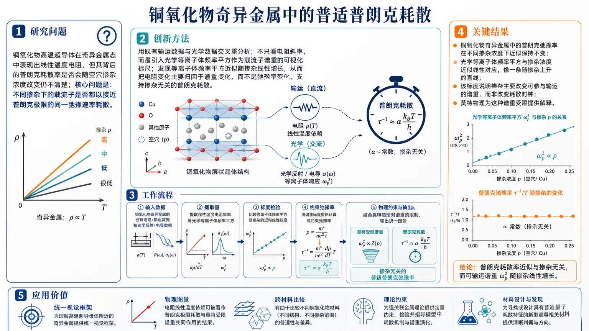
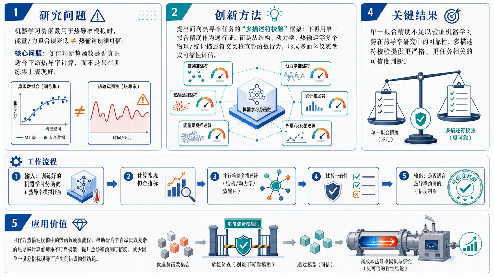

AI × Science 文献日报 2026/07/26
聚焦 AI × 物理 / 化学 / 材料交叉方向，自动过滤明显偏题的医学、教育与社会科学内容，并按主题重新排版，便于快速深读。
AI | 物理 | 化学 | 材料 | 交叉学科
核心关注（ML × ferro / 凝聚态）
2 篇今天这两篇工作把 ML 势和强关联电子态的“可验证性”都拉到材料级：在 NbOI2、CrI3、CrSBr、BaTiO3 这类体系里，MACE、NEP、equivariant GNN 生成的势函数不能只看能量/力误差，还要用多描述符同时检验热导率、声子和各向异性输运是否一致。热导率论文直接给出多描述符验证框架，指向 ML 势在低维铁电/磁性晶体中的外推可靠性。铜氧化物论文则把 DFT+U 与光学数据重分析结合，指出奇异金属的普朗克耗散更像莫特物理下的掺杂标度规律，而不是材料无关的经验常数。两篇放在一起，核心推进是：无论是晶格热输运还是强关联电输运，模型都必须在描述符、掺杂和实验标度上自洽。
-
01机器学习势热导率研究的多描述符验证Multi-descriptor validation of machine learning potential in studying thermal conductivity
📄 摘要：围绕机器学习势在热导率计算中的可靠性评估，作者提出多描述符验证思路，用不同描述符交叉检查势函数对热输运的预测一致性；当前给出的元数据未包含具体材料体系、训练集或热导率数值。
💡 亮点：这篇工作聚焦机器学习势在热导率预测中的可验证性，用多描述符交叉检验其稳健性。对计算材料而言，它强调热输运结果不能只看单一误差，而要看描述符一致性。
📐 方法要点：多描述符交叉验证 ML 势的热导率预测一致性
🔗 相关工作关联：MACE、NEP、equivariant GNN 的声子/热输运验证；低维铁电/磁性体系
💡 对你方向的启示：做 NbOI2、CrI3、CrSBr、BaTiO3 时先用多指标筛掉热导率外推失真的势函数
-
02铜氧化物奇异金属态中的普朗克耗散普适性Universal Planckian dissipation in the strange metal state of the cuprates
📄 摘要：作者重分析既有实验数据，指出铜氧化物超导体奇异金属态中的“普朗克”弛豫率与掺杂无关；关键依据是光学等离子体频率平方随掺杂线性变化，并据此将该规律解释为莫特物理的自然结果。
💡 亮点：重分析数据显示铜氧化物奇异金属的普朗克耗散率与掺杂无关，核心证据是光学等离子体频率平方∝掺杂。该结论把奇异金属散射与莫特物理直接连起来。
📐 方法要点：重分析光学/输运数据，提取掺杂无关的普朗克弛豫率
🔗 相关工作关联：奇异金属、莫特物理、光学电导、掺杂标度、Planckian 耗散
💡 对你方向的启示：解读铜氧化物时应优先检验 ωₚ² 与掺杂标度，而非只拟合单点弛豫率
今日摘要
总览：今日文献横跨计算材料、强关联电子与火山成像：一篇聚焦机器学习势用于热导率研究的多描述符验证，一篇通过既有数据重分析铜氧化物奇异金属中的普朗克耗散，一篇讨论石墨烯亚纳米曲率诱发的量子轨道挠电，另有环境噪声层析成像揭示阿苏火山浅层岩浆库与流体通道。
热点：今天最突出的主线是“可靠性验证”与“数据重解释”：前者体现在机器学习势的多描述符检验，后者体现在对铜氧化物实验数据的再分析。凝聚态方向上，普朗克耗散与莫特物理的联系被进一步强化，说明奇异金属标度关系仍是核心问题。二维材料方面，石墨烯的亚纳米曲率被用来触发新的轨道-极化耦合，显示几何调控正从应变走向曲率。方法学上，环境噪声层析展示了对火山浅部低速异常体的高分辨率成像能力，体现逆问题与现场观测结合的价值。
今日文献
4 篇 · 2 含图深析-
01
📊 含图深析
📄 摘要：作者重分析既有实验数据，指出铜氧化物超导体奇异金属态中的“普朗克”弛豫率与掺杂无关；关键依据是光学等离子体频率平方随掺杂线性变化，并据此将该规律解释为莫特物理的自然结果。
💡 亮点：重分析数据显示铜氧化物奇异金属的普朗克耗散率与掺杂无关，核心证据是光学等离子体频率平方∝掺杂。该结论把奇异金属散射与莫特物理直接连起来。
📖 展开分析 + 配图

研究问题铜氧化物高温超导体在奇异金属态中表现出线性温度电阻，但其背后的普朗克耗散率是否会随空穴掺杂浓度改变仍不清楚；核心问题是：不同掺杂下的载流子是否都以接近普朗克极限的同一弛豫速率耗散。创新方法论文的 Aha 点是用既有输运数据与光学数据交叉重分析：不只看电阻斜率，而是引入光学等离子体频率平方作为载流子谱重的可视化标尺；发现等离子体频率平方近似随掺杂线性增长，从而把电阻变化主要归因于谱重变化，而不是弛豫率变化，支持掺杂无关的普朗克耗散。工作流程输入铜氧化物奇异金属的已有电阻/输运数据和光学反射/电导数据；提取线性温度电阻斜率与光学等离子体频率平方；比较等离子体频率平方随掺杂的近似线性标度；用该谱重标度重新计算或约束弛豫率；结合莫特物理对载流子谱重的限制，输出“掺杂无关的普适普朗克弛豫率”图景。关键结果主要发现是铜氧化物奇异金属中的普朗克弛豫率在不同掺杂浓度下近似保持不变；光学等离子体频率平方与掺杂浓度近似线性对应，像一条随掺杂上升的直线；该标度说明掺杂主要改变可参与输运的谱重，而非改变耗散时钟；莫特物理为这种谱重受限提供解释。应用价值该研究为理解高温超导母体附近的奇异金属提供统一视觉框架：电阻线性温度依赖可被看作普朗克极限耗散与莫特受限谱重共同作用的结果；它有助于比较不同铜氧化物材料、约束强关联金属理论，并为寻找或设计具有普适量子耗散特征的新型超导相关材料提供判据。核心概览
该论文重分析铜氧化物超导体已有数据，研究奇异金属态中普朗克耗散率与掺杂的关系，属于强关联电子体系/高温超导输运方向。
方法要点
- 对已有铜氧化物超导体实验数据进行重新分析，而非摘要所述的新实验测量。
- 关注奇异金属态中的“普朗克”弛豫率，并考察其对掺杂水平的依赖性。
- 利用光学等离子体频率平方与掺杂的关系作为关键分析依据。
- 将等离子体频率平方近似线性随掺杂变化解释为摩特物理的自然结果。
- 具体数据来源、样品种类、拟合方法和误差分析摘要未详述。
关键结果
- 作者指出铜氧化物奇异金属态中的“普朗克”弛豫率不依赖掺杂。
- 关键证据是光学等离子体频率平方随掺杂近似线性变化。
- 该线性关系被认为可由摩特物理自然解释。
- 摘要未给出弛豫率的具体数值、掺杂范围或不同材料间的定量比较。
创新性判断
- 可能的新颖点在于：通过重分析已有数据，提出或强化“普朗克耗散率在铜氧化物奇异金属态中具有掺杂无关的普适性”这一结论。
- 另一个可能创新点是：将光学等离子体频率平方的掺杂线性关系与摩特物理联系起来，用以支撑普朗克耗散的普适解释。
- 不确定性：由于摘要未详述对比文献、数据集和分析流程，无法判断该观点相对已有工作的原创程度和争议性。
-
02
📊 含图深析
📄 摘要：围绕机器学习势在热导率计算中的可靠性评估，作者提出多描述符验证思路，用不同描述符交叉检查势函数对热输运的预测一致性；当前给出的元数据未包含具体材料体系、训练集或热导率数值。
💡 亮点：这篇工作聚焦机器学习势在热导率预测中的可验证性，用多描述符交叉检验其稳健性。对计算材料而言，它强调热输运结果不能只看单一误差，而要看描述符一致性。
📖 展开分析 + 配图

研究问题机器学习势函数用于热导率模拟时，能量/力拟合误差低并不等于热输运预测可信；核心问题是如何判断一个机器学习势是否真正适合下游热导率计算，而不是只在训练集上表现好。创新方法提出面向热导率任务的“多描述符校验”框架：不再用单一拟合精度作为通行证，而是从多个物理/统计描述符维度交叉检查势函数行为，形成类似多面体仪表盘的可靠性评估；Aha 点是把验证目标从“拟合得准”转向“对热输运物理是否一致”。工作流程输入为训练好的机器学习势函数和热导率模拟任务；先计算常规拟合指标，再引入多个与结构、动力学、热输运相关的描述符进行并行检验；随后比较各描述符是否一致支持该势函数的物理可靠性；最终输出该势函数是否适合用于热导率预测的可信度判断。关键结果论文明确指出单一拟合精度不足以验证机器学习势在热导率研究中的可靠性；多描述符校验可提供更严格、更任务相关的可信度判断。摘要未给出具体材料体系、热导率数值、误差降低比例或定量性能提升。应用价值该框架可作为热输运模拟中的势函数质检流程，帮助研究者在昂贵或复杂的热导率计算前筛除不可靠模型，提升机器学习势预测热导率结果的可信度，并减少因单一误差指标误导而产生的错误物性结论。核心概览
本文属于机器学习势函数与热输运计算方向，关注机器学习势在热导率研究中的可信性评估，主张用多描述符验证替代单一误差指标来判断模型可靠性。
方法要点
- 以机器学习势函数作为热导率计算的核心模型对象。
- 研究重点不是单纯构建势函数，而是评估其在热导率预测中的可靠性。
- 提出或强调“多描述符验证”框架，用多个指标/特征共同检验势函数表现。
- 摘要未详述具体描述符类型，例如能量、力、声子性质、结构采样或热流相关指标等。
- 摘要未说明采用的热导率计算方法，如分子动力学、Green-Kubo、非平衡 MD 或其他方法。
- 摘要未给出材料体系、训练数据来源、基准方法或实验/第一性原理对照细节。
关键结果
- 论文明确聚焦于机器学习势函数在热导率计算中的可信性问题。
- 主要结论是：单一误差指标不足以全面验证机器学习势在热导率研究中的可靠性。
- 多描述符验证被认为是更合适的评估策略。
- 摘要未给出具体热导率数值、误差大小、材料案例或性能提升幅度。
- 摘要未详述与第一性原理或实验结果的偏差，因此无法判断实际预测精度。
创新性判断
- 可能的新颖点在于将机器学习势验证从传统的单一误差评价，扩展到面向热导率计算的多描述符可信性评估。
- 相比只报告能量/力误差的常见做法，本文可能更强调热输运任务相关的综合验证；但具体采用哪些描述符，摘要未详述。
- 若论文系统展示了多描述符与热导率预测可靠性之间的关系，则其贡献可能偏方法学和验证框架，而非单一材料的热导率预测。
- 创新性强弱无法仅凭摘要确定，因为摘要未给出具体实验设计、对比基线和验证效果。
-
03
📄 摘要：标题显示作者在石墨烯中引入亚纳米尺度曲率，讨论由此触发的量子轨道挠电效应；当前未提供摘要正文，无法确认具体构型、方法或定量强度，只能确定研究焦点是曲率驱动的电子轨道极化耦合。
💡 亮点：该文瞄准石墨烯中的亚纳米曲率效应，指向量子轨道挠电这一新的曲率-电子耦合通道。若实验与理论成立，它会把二维碳材料的几何调控推进到轨道极化层面。
-
04
📄 摘要：团队用临时地震仪阵列和环境噪声面波层析成像重建阿苏火山浅部三维结构，在中岳火口下2.5–4.5 km识别出低S波速异常体，Vs约1.5 km/s，指示高破碎、受压岩体，并解释为浅层岩浆储库；摘要末尾还提到与高温条件下的超临界流体有关的通道，但原文在此截断。
💡 亮点：阿苏火山下2.5–4.5 km的Vs≈1.5 km/s异常被层析成像清晰锁定为浅层岩浆库。该工作展示了环境噪声层析在火山内部流体与熔体通道成像上的高分辨率能力。